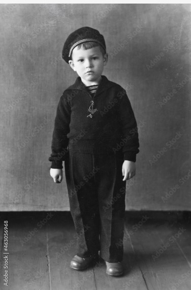

Our Story
The story of our bakery begins in the 1950s, in post WWII France where a young boy named Francois Baguette lived in poverty with just his mom to make ends meet. You see, Francois’ dad had died heroically as a resistance fighter against the German occupation. Although Francois and his mom didn’t have much, every year she would buy him a slice of cake for his birthday, and they would share it together by candlelight in their small apartment. For Francois, this was the sweetest memory. Later, Francois and his mother moved to Quebec and started a new life together. When Francois turned 30, his mom tragically died, and he was devastated! But as he looked back at the time they shared together; he remembered those special moments where they shared cake by candlelight. This inspired Francois to open a bakery, in Ottawa, where he dreamed of letting others share in these special moments!